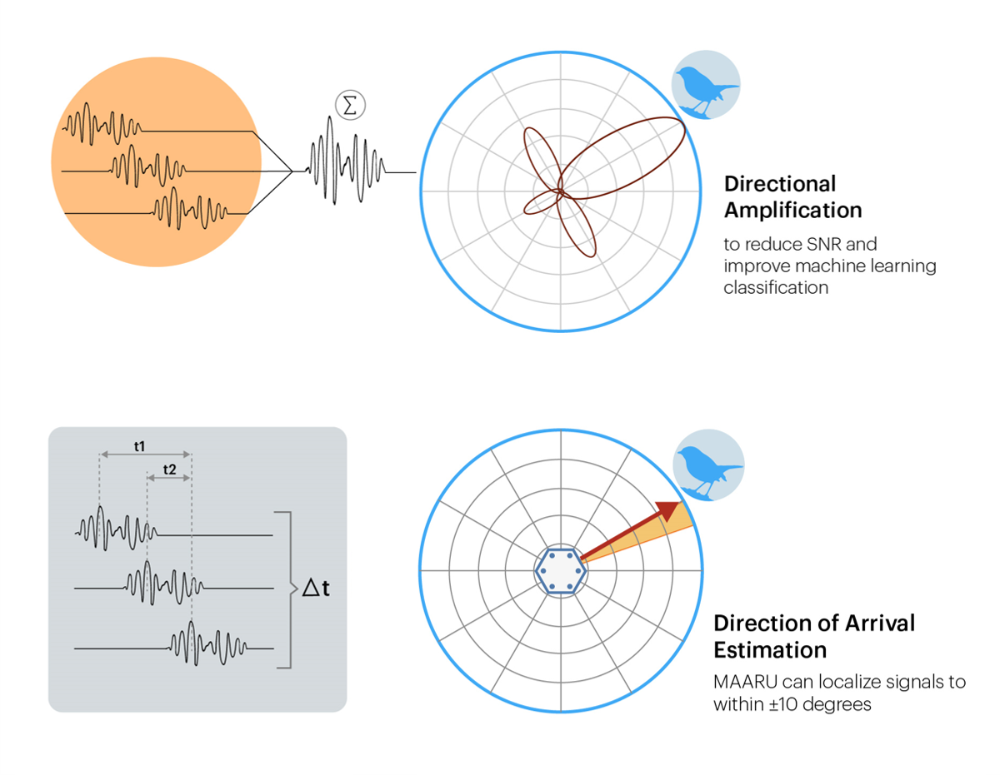
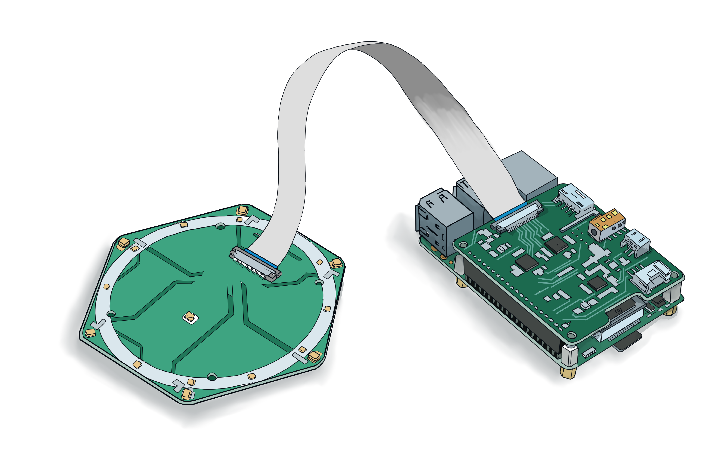

Using algorithms developed for robot hearing, MAARU can be used to track sound
sources in near real-time. The MAARU provides an exciting, accessible, low-cost option for those
looking to explore spatial soundscape ecology accurately and easily.
Ultimately, the added directional
element of the multichannel recording provided by MAARU allows for a new type of exploration into
sonic environments.
Find out more about the sonic theory here.
We built MAARU as an adaptation of the SAFE Recorder, an autonomous
omnidirectional recorder which has recorded across the globe countries and currently sends a
live stream of data to a website you can tune in to here.
MAARU is a multichannel acoustic recorder that can run online or offline and can be powered by
batteries or autonomously through renewable energy sources. MAARU is designed to be built by
anyone. All the components are purchasable online, the code is all open source, and the only
technical expertise needed is the ability to use a screwdriver!
Find out how to build your own MAARU here.

This work has been a collaborative effort between scientists working at Imperial College London.
Find out more about the team and get in contact here

MAARU in the press
MAARU and the fieldwork behind it have been featured in the popular science press. In
American Scientist, project lead Becky Heath wrote “Ecoacoustics of Forests” – a
first-person account of recording soundscapes from Borneo to the outskirts of London, and how spatial audio
is opening up new ways to monitor ecosystems.
Heath, B. E. (2025). Ecoacoustics of Forests. American Scientist, 113(4), 224–231.
Read it at American Scientist